JR-200 Emulator VJR-200 for Windows
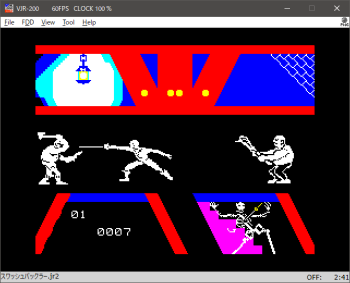 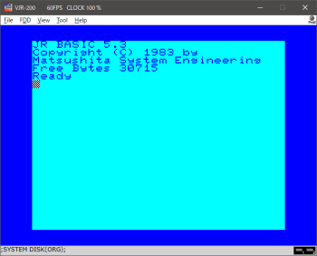
VJR-200 is an emulator of Panasonic JR-200 (Japanese model). However, some of JR-200U software work with VJR-200. English menu and message are available.
Operation Environment
Download
Preparation
Execution
Key Definition
Folders
Status Bar
Menu (Operation Manual)
VJR-200 for Android is here.
JR2Rescue - WAV to CJR, CJR to WAV, etc converter is here.
The following software was used for VJR-200 for Windows.
X88000 (https://quagma.sakura.ne.jp/manuke/x88000.html)
Manuke Station
* BSD 3 Clause License
MAME (http://www.mame.net/)
copyright-holders: Nicola Salmoria, Aaron
Giles
cereal (https://uscilab.github.io/cereal/)
LICENSE
copyright-holders: Randolph Voorhies, Shane Grant
* Zlib License
TinyXML-2 (https://github.com/leethomason/tinyxml2)
copyright-holder:
Lee Thomason
Operation Environment
Until V1.5.2 - Windows Vista SP2 and later
V1.6.1 and later - Windows 10 and 11
Because it uses Direct2D, it does not work on Windows XP.
Download
2025.1.4 - Version 1.8.1
* Binary
32bit https://github.com/find-jr200/VJR200forWindows/releases/download/V1.8.1/VJR200_181_win32.zip (213KB)
64bit https://github.com/find-jr200/VJR200forWindows/releases/download/V1.8.1/VJR200_181_win64.zip (241KB)
* Source code
find-jr200/VJR200forWindows (github.com)
Up to version 1.6.1 can be built with Visual Studio 2015 Community, and after 1.7.1 it can be built with Visula studio 2022 Community. Version 1.3.1 and later require cereal V 1.2.2 (https://uscilab.github.io/cereal/). Please download and deploy this library, add cereal-1.2.2\include\ to the include path of Visual Studio.
former version (Japanese page)
Changes
2025.1.4 - Version 1.8.1
- fixed MN1271, MN1544
- implemented undocument instruction NBA($14) in MN1800A
- The state file has been updated. You can read one previous version, but if you run into problems,, delete the old state file.
- Added load error avoidance function for swashbuckler to "Raise clock only when SAVE, LOAD" of emulator - CMT in option dialog. If you have problems with this option turned on, please turn it off.
- fixed other minor issues
2024.1.3 - Version 1.7.3
- added window size 4x, 5x
- added display rotation 90, 180, 270 degrees.
2023.7.2 - Version 1.7.2
- Fixed an issue that could cause noise in sounds.
2023.6.4 - Version 1.7.1
- Rebuilt with Visual Studio 2022. If you are using an older runtime, you may need to install a newer version.
- 64bit binaries are also released.
- It works on Windows 10 and later.
- Fixed Other minor fixes.
2022.10.22 - Version 1.6.1
- Implemented FDD. In order to use FDD, expansion ROM and image file of system disk(D88 format) are required.
- Since state file was upgraded, the past file can no longer be read. Additionally, the rules for where state files are stored when using FDD have changed, so see the man section for details.
- Fixed incorrect implementation of TCC ,TCD, TCF
- Fixed the attribute at address 0xc9ff not being set
- Fixed other minor issues.
2021.6.27 Version 1.5.2
- Added jump history and the break function when reading / writing the specified memory area to the debugging window.
- Swapped the positions of the breakpoint text boxes and checkboxes.
2021.3.7 Version 1.5.1
- A macro function has been added (Tool - Macro menu). Up to 10 fixed phrases can be registered and entered by pressing the keys F9 - 1, 2, 3, ...... 9, 0 (numeric keypad not allowed) or by double-clicking on an item.
- Changed the configuration file from ini to XML.
2020.12.10 Version 1.4.2
Watch view in debug window was improved.
2020.11.8 Version 1.4.1
1. enhanced the debugging function.
- Expanded the number of breakpoints to 12. You can temporarily disable a breakpoint by unchecking the checkbox to the left of the edit box.
- Add a watch, which can show 1 byte or 2 bytes area in list form. However, the value of the watch only changes when you press Pause, Stop at a breakpoint or Step Execute. So the value may not match the memory window which is constantly updated.
- Support for loading label file for debugging. See "File - Load debugging label file" for details on file formatting.
2. CJR files can be dragged and dropped. You can drop up to 10 files at the same time, all files are "Quick Loaded".
3. Some keyboard accelerators have been changed.
- File - Mount - Ctrl + Alt + M
- File - Quick Load - Ctrl + Atl + Q
4. "File - Save CJR" menu has been removed.
Preparation
1. Extract ROM and font from actual machine.
MSAVE "ROM1",$A000,$BFFF (file size 8192byte)
MSAVE "ROM2",$E000,$FFFF (file size 8192byte)
MSAVE "FONT",$D000,$D7FF (file size 2048byte)
If you have a FDD system
MSAVE "CAS1:FDDROM",$D800,$DFFF (file size 2048byte)
Please convert it to BIN file with JR2Rescue.
* JR2Rescue is free software that converts WAV files recorded with programs on JR-200 to CJR format and other formats. Download is here.
Please check that the file size is correct. Since it checks the file size, it can not be registered unless it is incorrect.
2. Merge ROM files.
COPY /B ROM1.BIN+ROM2.BIN ROM.BIN
It does not work if the order of combining is reversed. Check the file size after joining should be 16384 bytes.
3. Visual C++ 2015 - 2022 redistributable package is required. Please install it if not installed.
32bit runtime https://aka.ms/vs/17/release/vc_redist.x86.exe
64bit runtime https://aka.ms/vs/17/release/vc_redist.x64.exe
Execution
1. Extract vjr200_xxx.zip and place VJR200.exe, VJR200_jp. dll, VJR200_en.dll in the same folder. Even if you only use English, VJR 200_en.dll is necessary. It will not work with VJR 200.exe alone.
VJR200.exe Executable file
VJR200_jp.dll Japanese
resource file
VJR200_en.dll English resource file
You can create a folder under Program Files, but other place may be better. By the way, the setting file is placed under AppData\local\FIND_JR\VJR-200\ of the user folder.
2. When starting for the first time, ROM and font file are not set, so this screen will appear.
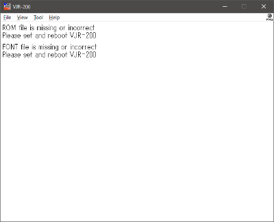
3. Set each file in [Tool] - [ROM, FONT file setting] dialog, end VJR-200 once and re-execute.
4. For English keyboard, please change [Option - Emulator - keyboard] setting to English.
Operation
Key Definition
| GRAPH OFF | Page Down |
| GRAPH ON | Page Up |
| KATAKANA (Japanese letters) |
End |
| BREAK | Esc or F11 |
| Back Slash Key | |
| F7 | |
| F8 |
Folders
| Documents | SAVE, MSAVE (CJR, JR2) LLIST, LPRINT (RAW, TXT) Memory dump (dump.bin) |
| Pictures | LLIST, LPRINT (PNG) |
Status Bar

It is the name of the file mounted, the state of the remote terminal (ON/OFF), read/write (R/W), time counter from the left.
It is as follows during loading.

When using FDD, from the left, the tape mount file, the image of drive 1, the image of drive 2. The far right is the FDD access lamps.
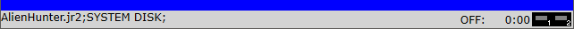
Menu (Operation Manual)
File
Mount CJR, JR2
Mount the CJR or JR2 file.
* What's JR2 Format
See about JR2 Format
Quick Load CJR
Please be careful as this is a dangerous feature. BASIC, Machine language files are written directly to memory. Therefore, although it ends in a moment, inconvenience may occur because it writes to the thing which it was executing so far. It is recommended to reset before using. Also, you can not use it when executing LOAD from the program (many commercial products for JR-200U).
It is possible to use LOAD, MLOAD manually as a possible case. Multiple LOAD, MLOAD can be executed repeatedly.
As a common failure, if you manipulate the menu without Ready immediately after resetting, you will not be able to execute it properly because it reads in the state that initialization of JR-200 is not finished.
CJR files can also be dragged and dropped. You can drop up to 10 files at the same time, all files are "Quick Loaded".
Unmount
Unmount the CJR and JR2 files.
New JR2 file
Create a new JR2 file.
JR2 Next
JR2 Prev
Cue the next or previous program, data. Only JR2 file is valid.
* NOTICE * It may not be possible to cue with special format files.
Go to Top
Move to the beginning of the tape. Both CJR and JR 2 are valid.
Printer Page Feed
When the printer output is set to PNG and "automatic page feed" is turned off, it is manually output as page feed = PNG file. If nothing is printed, it will not be output.
Quick Type
It reads a text file containing BASIC code and automatically inputs it to the emulator. Automatically maximizes the CPU clock only while it is being input and returns to its original state when finished. Up to 65536 bytes of text file can be read. To stop inputting in the middle, press Esc.
If you get an error during input, please slow down "quick type speed" in option dialog.
Save Memory Image
Write the image of the memory in the document folder with the name "dump.bin".
Load Debugging Label File
Load the definition file for converting the address displayed in the disassembe window into a string. The file must be created in the following format.
| Label Name (within 20 chars) | One or more spaces or tabs | Address (Hex 0 - FFFF, without "0x") |
| KEY_SCAN | e8cb | |
| CLS | ec7f |
Save State, Load State
State saves are saved in association with files only when the FDD system is disabled and tape-compatible files (CJR, JR2) are mounted. Up to 9 state files while mounting the file abc.cjr are saved in the same folder with the name abc.cjr_0.sta.
State data for other states (no mounted tape support file or FDD system enabled) is saved under AppData\local\FIND_JR\VJR-200\ with a name such as nomount_0.sta. It is worth noting that all state savings when using "Quick Load" share data without mounting. If you want to divide the state file for each game, please mount -> LOAD, MLOAD without using Quick loading. If you need more than two files, we recommend that you convert it to JR2 (CJR changes the file to be linked depending on load order).
Recent Files
The first ten pieces show the files used in "Mount CJR, JR2", the last ten pieces show the files used in "Quick Load CJR".
FDD
Disk Image
Select the D20 file and assign the image to two drives. To boot DISK BASIC, assign the system disk to drive 1 and reset VJR-200 ([File]-[Reset]).
* D20 files have the same format as D88 files.
Detach FDD System
If the VJR-200 has an FDD expansion ROM file registered, it will try to boot from the FD assuming that the FDD system is connected. Check this and reboot if you want to boot with the main unit's ROM BASIC while registering the expansion ROM.
View
1x - 5x
Change window size.
Full Screen
It displays in full screen. To cancel full screen Alt + Enter or double click.
Square Pixel, Video Output Aspect
Since the width of the video output of the JR-200 actual machine has been reduced by 15%, it is "Video Output Aspect" to reproduce it. However, pixels may not be integral multiples, which makes it difficult to see. It is recommended to use 3 times or full screen with smoothing.
Smoothing
Sets whether or not to smooth.
Rotate
rorate screen 90, 180, 270 degrees.
Printer LED, Status Bar
Sets whether or not to display printer LED icon, status bar.
Tool
Graph Keyboard
Displays a virtual keyboard for entering graph characters.
Romaji Kana Input
During Katakana mode, "Romaji to Katakana transfer input" is enabled. However, when the program acquires the character code of Katakana with real-time key scan (PICK, STICK), it will not operate properly. In that case please input usual Katakana.
Macro
Up to 10 fixed phrases can be registered and entered by pressing the keys 1, 2, 3, ...... 9, 0 (numeric keypad not allowed) or by double-clicking on an item. The return key is represented by \r and multiple lines can be entered(max 80 characters).
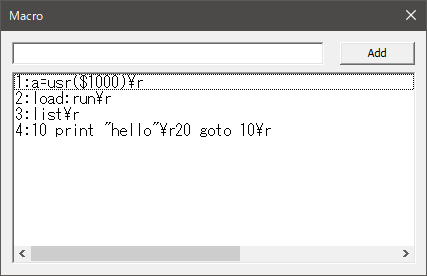
Forced Joystick Mode
Make it possible to operate games that only support keyboard operation with the joypad. Specifically, it converts the input of the joypad on Windows to the cursor key and up to two keys (space key, X, Z, etc.) input. Therefore, it is not practical to use software that uses three or more keys in addition to the cursor keys. Please note that not all games can be operated.
Before using this mode, you first need to assign the appropriate Joypad buttons to the A and B buttons in the Joypad settings. For the method of key assignment, refer to option dialog - joypad item.
Turning on forced joystick mode is not saved (key assignments are saved). Please set it each time it starts up.
Debug Window
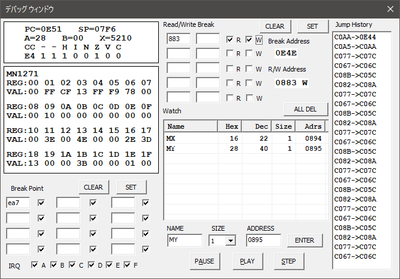
* Previously, you had to press SET when setting a breakpoint, but since versioin 1.4.1, changes are automatically applied when you change the checkbox or press Enter in the edit box (i.e. when the focus is moved).
Break Point
You can step by step while displaying the contents of the registers of the CPU and peripheral chip MN1271. You can also set breakpoints. You can temporarily disable a breakpoint by unchecking the checkbox to the right of the edit box.
* A breakpoint cannot be set on the next instruction of CLI or SEI. This is by design.
IRQ
At the bottom IRQ, you can specify whether to generate TCA - TCF IRQ during step execution. If you uncheck it, IRQ will not occur only during step execution. However, even if IRQ is checked, interrupt processing will not be executed unless the interrupt flag($C81E - $C81F) is set.
Even if the debug window is opened, this specification has no effect during normal execution.
Read/Write Break
When the specified address (range specification is possible) is read/written, it breaks. The address of the read/write instruction is displayed in "Break Address". "R/W Address" has "R" for Read and "W" for Write after the address.
Check the "R" checkbox if you want to break when reading, and check the "W" checkbox if you want to break when writing.
Specify the range as follows: A < B
| FROM | TO | |
|---|---|---|
| A | (blank) | OK |
| (blank) | A | ERROR |
| A | B | OK |
| B | A | ERROR |
Watch
"Watch" displays 1-byte or 2-byte area in list form. However, the value of the watch only changes when stopping at a breakpoint or when you press the step execution. Therefore, the value may not match the constantly updated memory window.
If you want to delete a watching item, right click and select context menu "Delete", or select the item and press delete key.
Jump History
Display the jump history. For NMI and IRQ, "i" is displayed to the right of the address.
Memory Window
Display the memory contents in real time.
Disassemble Window
Disassemble and display the code of the execution position. You can not move to other address.
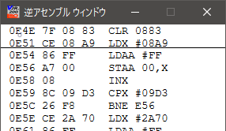
The first line is the address of the previous execution, and the underlined line is the next address to be executed.

Sometimes things like NA (***) are displayed in mnemonic. Although this is an undefined area of MN1800A in terms of specification, it is inferred that it is actually executed as an instruction in parentheses. Since it is a personal analysis to the last, there is a possibility of being wrong.
FPS, CPU Speed
Display FPS and CPU speed in the title bar.
Set ROM, Font Files
Specify the ROM file and Font file required for execution. If you have a FDD system, specify FDD expansion ROM.
Option
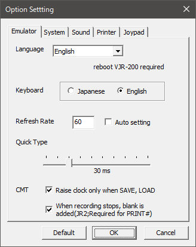
* Language
Switch the menu and message language to Japanese or English. In the case of Auto, only Japan is Japanese according to user locale ID (LCID), otherwise it is English.
* Keyboard
For English keyboard, please change [Option - Emulator - keyboard] setting to English.
* Refresh Rate
Because the VJR-200 operates with reference to VSYNC, if the vertical synchronization frequency can not be correctly acquired, the execution speed will be out of order. In that case, uncheck the automatic setting and manually set it.
* Quick Type Speed
Quick type Input speed can be set from 10ms to 100ms. Please delay it if an error occurs.
* Raise clock only when SAVE, LOAD
Only when SAVE and LOAD, CPU clock is set to 1000% so that it can
process at high speed. When finished, it returns to the original clock.
From
V1.8.1, to avoid swashbuckler load errors, enabling this option will reduce
the clock consumption of each 6800 instruction by 2 clocks per instruction
only during SAVE and LOAD.
* When recording stops, blank is added (JR2; Required or PRINT#)
When recording to the JR2 format, 500 byte blank is added every time a stop command is issued to the remote terminal. This is necessary to successfully read PRINT# data. You can uncheck it if you do not use PRINT#.
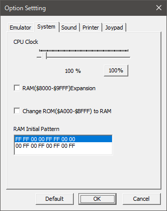
* CPU Clock
You can specify from 50% to 1000%. There may be inconvenience if you change too much.
* RAM Expansion
If you change the ROM of $ A000 to $ BFFF to RAM, it will be in the same state as when MON was executed.
* RAM Initial Pattern
RAM Initial pattern can be selected from the following two types.
(1) FF FF 00 00 FF FF 00 00
Repeat "FF FF 00 00 FF FF 00 00" and "00 00 FF FF 00 00 FF FF" every 256 bytes from address n000.
(2) 00 FF 00 FF 00 FF 00 FF
Repeat "00 FF 00 FF 00 FF 00 FF" and "FF 00 FF 00 FF 00 FF 00" every 128 bytes from address n000.
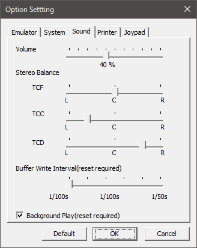
* Stereo Balance
You can set left and right pan for each channel. Since TCF is used for SOUND statement and warning sound, it is recommended to set it to the center and set the TCC and TCD to swing left and right.
* Buffer Write Interval
You can specify the writing interval of DirectSound buffer from 1/100s to 1/50s. The initial value is 1/60s. The smaller the value, the smaller the delay, but depending on the environment the operation may become unstable or abnormally terminate.
If it does not start normally, delete vjr200.ini (if it exists) and vjr200.xml in (user folder)\AppData\Local\FIND_JR\VJR 200\ (all settings are initialized). Or delete vjr200.ini (if it exists) and change the following item in vjr200.xml
<SBufferWriteInterval>60</SBufferWriteInterval>
* Background Play
It continues playing even when the window becomes inactive.
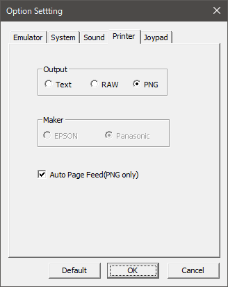
* Output
When set to RAW, data written to the printer output port is output without being filtered.
* Maker
Set the printer model. Valid only for RAW output.
* Auto Page Feed (PNG only)
In the case of PNG output, when there is no data output for 500 ms, judge it to end and page forward to output PNG file. Then, if problems occur, or if you want to group hard copies and lists into one image, uncheck and manually page forward with [File] - [Printer Page Feed].
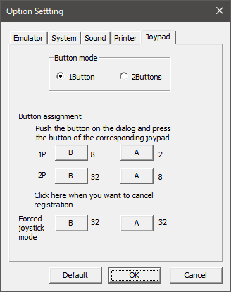
* Button mode
It is recommended that you set it to 1 button except when using software corresponding to 2 buttons.
* Button Assignment
It does not need to be set when using with 1 button.
* Forced joystick mode
When using this mode, you need to assign appropriate Joypad buttons to A and B buttons of 1P in the Joypad setting. Button mode itself may be left as 1 button.
After assigning, press the A button on the dialog and press the key on the keyboard you wish to assign. Next, register the B button in the same way.
Forced joystick mode works the same way even if button mode is 1 button or 2 buttons.
[TOP PAGE]